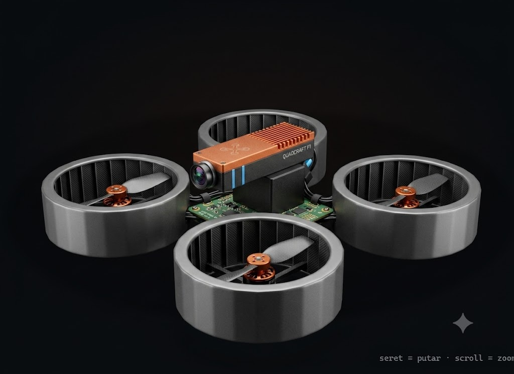

Cinewhoop ducted 4S dengan kamera menunduk dan Raspberry Pi untuk merekam — drone serbaguna untuk dokumentasi & inspeksi visual sederhana. Halaman ini menjelaskan setiap bagiannya, lengkap dengan model 3D interaktif.

Simpan gambar desainmu (yang foto-realistis itu) ke folder web dengan nama persis:
desain-hemat.jpg
Lalu muat ulang halaman ini — gambarmu otomatis muncul di sini sebagai sampul. (Bisa juga .png; beri tahu saya kalau begitu.)
Model interaktif desain kita: kamera sudah dipindah ke bawah (menunduk untuk merekam) dan Raspberry Pi Zero 2 W ditambahkan di atas AIO board. Seret untuk memutar, tekan Urai untuk memisahkan, klik komponen untuk menyorot.
Sesuai label pada desain QUADCRAFT F1-mu — dengan penjelasan jujur fungsi tiap bagian, dan catatan di tempat yang perlu diluruskan.
Cincin di sekeliling tiap baling-baling. Dua fungsi: melindungi (aman menabrak dinding & orang, bisa terbang indoor) dan menambah efisiensi dorong pada kecepatan rendah. Inilah yang membuatnya "cinewhoop", bukan freestyle.
Motor memutar bilah karbon kaku di dalam duct. Hub tembaga pada desainmu adalah sentuhan estetік; fungsinya sama — mengubah listrik jadi dorongan.
Otak penerbangan. F7 membaca gyro & barometer, menjalankan Betaflight, dan menyuruh ESC mengatur keempat motor ribuan kali per detik. ESC 35 A pas untuk motor cinewhoop yang lebih kecil.
Pendingin untuk prosesor & ESC agar tak overheat saat hover lama. Antena dipole menyatu untuk jangkauan sinyal. Warna tembaganya jadi ciri khas visual desainmu.
Empat sel (14,8 V nominal). Untuk cinewhoop, 4S memberi keseimbangan tenaga & bobot yang pas — tidak seliar 6S, cocok untuk terbang halus & sinematik.
Otak kedua, di atas AIO board. Tugasnya merekam (dan nanti bisa deteksi objek). Ini komponen yang mewujudkan "sensor visi" pada desainmu — karena FC F7 sendiri tidak bisa memproses gambar.
Penting: Pi TIDAK menerbangkan drone. FC yang terbangkan; Pi hanya melihat & merekam.Sesuai permintaanmu, kamera perekam dipindah ke bawah, menghadap tanah — untuk mendokumentasikan objek/permukaan di bawah drone. Kamera FPV depan tetap untuk mengemudi.
USB-C untuk konfigurasi & isi daya Pi. IMU (gyro+akselerometer) menjaga keseimbangan; barometer membantu menahan ketinggian.
| Komponen | Catatan | Rp |
|---|---|---|
| Frame cinewhoop ducted 3" | Duct pelindung + bodi | 300 rb |
| Stack F7 + ESC 35 A | FC + ESC 4-in-1 sepaket | 750 rb |
| Motor + bilah karbon | 4 motor cinewhoop + propeller | 550 rb |
| Kamera FPV + VTX | Untuk mengemudi | 450 rb |
| Baterai 4S (×2) | Plus charger | 650 rb |
| Raspberry Pi Zero 2 W + kamera | Companion untuk rekam | 400 rb |
| Radio + penerima ELRS | Kendali | 1 100 rb |
| Barang kecil | Kabel, konektor, SD card | 200 rb |
| Perkiraan total (tanpa goggles) | ± 4,4 jt | |